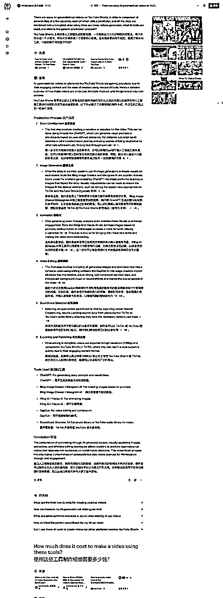
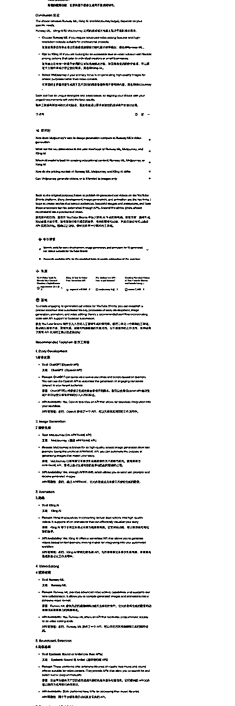
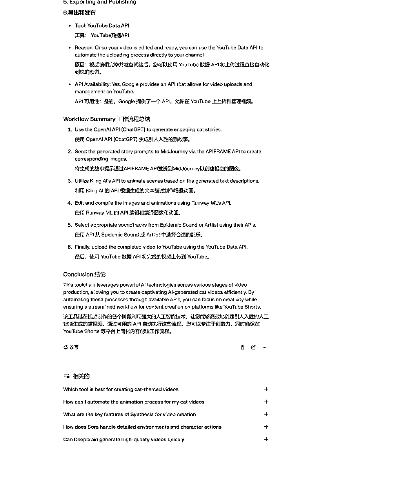
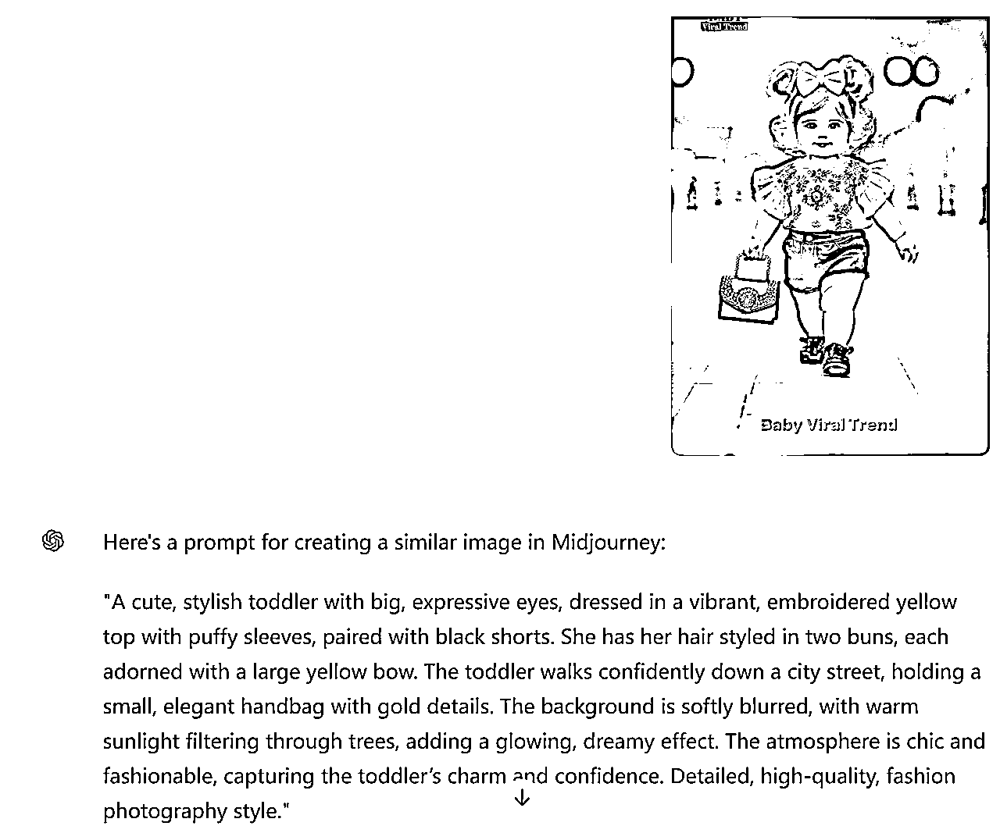
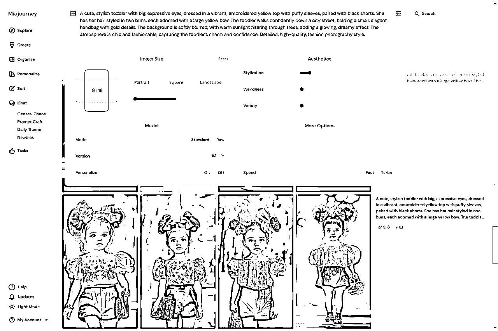
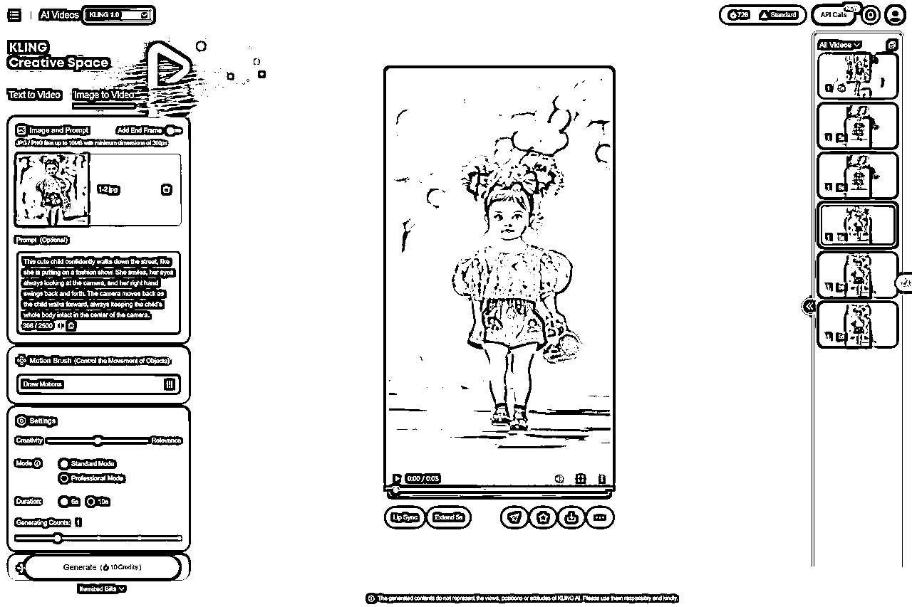
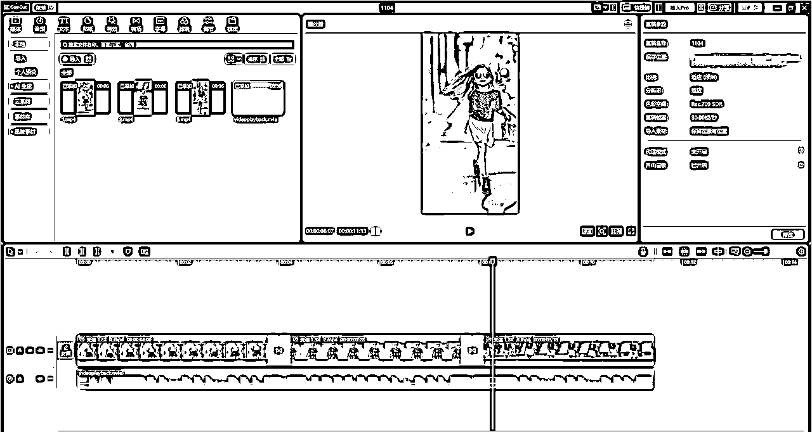

来源：https://lgk9g1d3vy.feishu.cn/docx/JLM9dVBLZoxDxBx1SXncfIJZnnd
大家好，我是一页书，今年10月刚加入生财的新人，第一次发帖，希望各位圈友大佬们多多指教。
入圈以来一直在探索适合自己的方向，生财众多高质量的精华帖、航海手册让我受益良多，尤其是亦仁老大最近的小灯塔系列和超级标系列，简直就是我需要什么来什么，不光给我在错综复杂的局势中指了条明路，甚至还和我的兴趣与能力很匹配，让我有种老大一对一定制化服务的错觉。
本文是在亦仁老大以下文章的基础上的思考和初步实践总结，主要还是围绕第2个超级标 YouTube 和 Shorts 展开，希望对刚开始这个项目的圈友有所启发。
这些文章值得反复揣摩。
本文主要内容：
作为对 YouTube Shorts 完全不熟悉的小白，首先要弄明白它是个什么，赚钱的模式和链条是怎样的，它与原来的 YouTube 有什么异同。于是按照超级标02的线索，搜索信息，最后汇总到如下表格。
| YouTube | Shorts（创收政策） | |
|---|---|---|
| 模式 | 创作视频 ⇒ 上传到 Youtube ⇒ 用户打开视频 ⇒ 系统匹配广告 ⇒ 用户观看/点击广告 ⇒ 广告收入 | 创作视频 ⇒ 上传到 Shorts ⇒ 用户观看视频 ⇒ 广告收入 |
| 为什么 | 为什么是 YouTube 1. Google广告平台的巨大商家量。 2. CPM 较高，但视频制作较复杂，流量获得相对较难。 | 为什么是 Shorts 1. （同） 2. RPM 较低，但视频制作较简单，流量获得相对较容易。 3. Shorts 和 TikTok 竞争，引入广告分成计划（TikTok 广告分成机制更加复杂且不透明）。 |
| 为什么是 AI 生成视频 1. 提高视频制作的效率。 2. 不需要露脸，不需要较强的口播表达能力。 | （同） | |
| 流程 | 注册 YouTube 账号 | 注册 YouTube 账号：Shorts 与 YouTube 共享账号 1. 共享频道页面、订阅者，YouTube Studio统一管理。 2. 广告收益：加入 YPP 门槛二选一，收益整合到同一个账户。 3. 推荐算法共享：在 Shorts 和长视频之间相互推。 |
| 加入 YPP（YouTube Partner Program），门槛： 1. 在过去 12 个月内获得 1000 名订阅者，且有效公开观看时长达到 4000 小时。 2. 遵循 YouTube 频道获利政策。 | 加入 YPP（YouTube Partner Program），门槛： 1. 在过去 90 天内获得 1000 名订阅者，且 Shorts 公开观看次数达到 1000 万次。 2. 遵循 YouTube 频道获利政策。 | |
| 细分领域选择，视频制作与上传。 | （同） | |
| 广告展示类型 1. 展示广告（Display Ads）：出现在推荐视频和播放页旁，收入来源于观看者的点击。 2. 插播广告（Skippable Ads / Non-Skippable Ads）：在视频开头、视频中段或结尾播放，按观看时长或完整观看次数计算收入。 3. Bumper Ads：短时广告，通常不超过6秒，用户无法跳过，收入按展示次数计算。 4. 重叠广告（Overlay Ads）：透明广告条显示在视频下部，按点击次数计算收入。 | 广告展示类型 1. 视频之间的间隙广告：在用户观看Shorts Feed时，广告会以间歇的形式插入视频流中，通常是视频与视频之间，广告不属于任何一个特定视频。 2. 顶部横幅广告：在Shorts Feed的顶部区域也会展示横幅广告，观众一进入Shorts Feed即可看到。 | |
| 广告匹配：AdSense广告系统自动匹配，广告匹配与视频内容有关，综合视频内容、广告内容、广告竞价、用户偏好等因素匹配。 | 广告匹配：AdSense广告系统自动匹配，广告匹配与单个视频内容不直接相关，主要根据用户偏好来匹配。 | |
| 制作者设置：广告展示类型、广告插入的频率和位置。 | 制作者设置：无需任何设置。 | |
| 广告收入模式：广告与视频匹配，按照该视频带来的广告指标独立核算。 | 广告收入模式：广告不与视频匹配，所有制作者统一广告分成池，根据每位创作者的观看量按比例分配。 | |
| 广告指标（YouTube主要是前两种） • CPM（Cost per Mille，千次展示费用）：按广告被观看者看到1000次进行收费，无论观众是否点击广告。 • CPC（Cost per Click，每次点击费用）：按广告点击次数来计算费用的模式。 • CPV（Cost per View，每次观看费用）：按每次有效观看收费的方式，通常广告需播放超过30秒（或广告全长）才算一次有效观看。 • CPA（Cost per Action，每次行动费用）：广告主只在观众完成特定行动（例如注册、下载、购买等）后付费。 • CPI（Cost per Install，每次安装费用）：专为移动应用的推广而设，广告主按观众通过广告链接安装应用的次数付费。 • CPS（Cost per Sale，每次销售费用）：基于广告引导的实际销售量来计费，广告主在观众完成购买后支付费用。 • Flat Rate（固定费用广告）：部分品牌或广告主会选择直接与创作者签订固定费用的广告投放合作。 | 广告指标（折算） RPM（Revenue per 1,000 views，千次观看收益）： 与 YouTube 的 CPx 系列指标不同，YouTube 的 CPx 通常是广告主通过竞价后，愿意为广告指标支付的费用，相对固定；而 Shorts 中，由于广告不与任何单个视频关联，而是所有制作者统一瓜分一个广告收益池，因此这里的 RPM 是根据 Shorts 广告收益规则，以及实际运行情况折算得到，并非固定值。 Shorts 广告收益规则计算方式如下： 某创作者收益 =（广告池收益总额 - 背景音乐许可费用）* 该创作者视频播放量 / 所有YPP创作者视频播总放量 * 45% 具体例子见 Shorts创收政策 因此，RPM =（广告池收益总额 - 背景音乐许可费用）/ 所有YPP创作者视频播放总量 * 45% *1000 影响 RPM 的两个最重要因素：广告池收益总额，所有YPP创作者总视频播放量。 有资料显示，当前 RPM ≈ $0.15，比一年前的 $0.01~$0.06 高很多（尚未证实）。 | |
| 分成比例：创作者 55%，YouTube 45% | 分成比例：创作者 45%，YouTube 55% | |
| 结算：每月结算一次，收入达到最低门槛（通常为100美元）时，会通过AdSense发放。 | （同） | |
| 底层逻辑 | • CPM 公式：单位时间利润 = 视频制作效率 * 视频平均播放次数 * CPM/1000 * 55% - 视频制作成本 • CPC 公式：单位时间利润 = 视频制作效率 * 视频平均播放次数 * 广告点击率 * CPC * 55% - 视频制作成本 | • RPM 公式：单位时间利润 = 视频制作效率 * 视频平均播放次数 * RPM/1000 - 视频制作成本 备注：RPM 的折算中已经考虑了 45% 的分成比例。 |
| 关键因素 | 加入YPP：要加入YPP，除了达到门槛要求，账号本身还要合规，并解决中国地区问题，须仔细研究YPP条款。 | （同） |
| 细分领域选择 1. 意义：直接关系到用户群体、播放量、CPM等关键因素，对最终收益有直接影响。 2. 方法：找对标账号，提取关键词，重新组合并筛选。 | 细分领域选择 1. 意义：主要影响观看量，其次通过内容的受众群体，间接影响 RPM（尚未证实）。 2. 方法：（同） | |
| 视频高效制作 1. 内容大纲：长视频需要一定的结构和内容设计，有一定的人工工作量。 2. AI 视频制作工具：满足内容要求、效率高、成本低。 | 视频高效制作 1. 内容大纲：短视频较简单，通常几个关键词即可，人工工作量较少。 2. （同） | |
| 提现：须研究 YouTube 账号提现方式。 | （同） | |
| 风险规避 1. 侵权 | （同） |
有了这些基本认识，我判断 YouTube Shorts AI 视频项目可以作为自己的上手项目，甚至是长期深耕项目，理由如下：
既然决定开干，接下来抓大放小，把整个链条中的关键因素进一步展开行动，快速降低项目整体的不确定性。
首先，“加入YPP、提现、风险”这几项，初步调研并不复杂，跨国难度并没有一开始想象的大。
其次，“细分领域选择、视频高效制作”这两项是目前还不熟悉的，接下来重点研究。
参考生财文章《YouTube 的前景，以及全球第一博主和华人区第一博主的 YouTube 方法论》《航海实战｜YouTube-视频创作｜实战手册》、《通用能力｜怎么定位和选品》，结合自己的思考，总结有关定位的是什么、为什么、怎么做等一般方法。
什么是定位：定位就是一个细分领域，针对一部分特定群体，为了解决他们的特定问题，为他们提供产品或服务。
为什么需要定位
如何定位，首先回到目的，无非两点：
前者偏客观（客观收益），后者偏主观（主观满足）
客观收益
主观满足
综上，如何定位可总结为如下步骤
具体到 YouTube 平台，对上述通用方法做些调整。
| 频道名称 | URL | 注册时间 | 播放量/亿 | 视频数 | 订阅数/万 | 内容框架 | 画面 | 声音 | 趋势 | 满足什么需求 | 作者如何满足 （成功要素） | 我能否做 | 我不讨厌 | 备注 |
|---|---|---|---|---|---|---|---|---|---|---|---|---|---|---|
| Lute Catkin | https://www.youtube.com/@LuteCatkin | 2024-6-24 | 2.2 | 26 | 157 | 猫咪智斗恶人 | 小动画 | 配乐+简单配音 | 10-4停更 | 娱乐，爱猫 | 荒诞离奇的剧情 精美的小动画 | 是 | 8-16开更 | |
| GingerCatTV | https://www.youtube.com/@gingercat-tv | 2024-2-23 | 3.1 | 62 | 145 | 用猫咪呈现人类的感人故事和价值观 | 小动画 | 配乐+简单配音 | 保持 | 心灵鸡汤，爱猫 | 感人的故事 精美的小动画 优美可爱的配乐 | 是 | 3-5开更 | |
| Cat Realm AI | https://www.youtube.com/@CatRealmAI | 2024-1-15 | 1.9 | 36 | 146 | 比较杂，包含上面的元素 | 图片 | 配乐 | 7-8停更 | 娱乐，爱猫 | 荒诞或感人的剧情 精美的图片 | 是 | 3-23出爆款 少数超级爆款 |
总结：
| 频道名称 | URL | 注册时间 | 播放量/亿 | 视频数 | 订阅数/万 | 内容框架 | 趋势 | 满足什么需求 | 作者如何满足 （成功要素） | 我能否做 | 我不讨厌 | 备注 |
|---|---|---|---|---|---|---|---|---|---|---|---|---|
| Deep Sea Discoveries | https://www.youtube.com/@san-shanyu-aiyo2633 | 2024-2-1 | 1.9 | 71 | 37 | 深海打捞奇特生物，AI制作 | 波动 | 猎奇 | 夸张、奇特且逼真的海洋生物AI视频 | 否 | ||
| Meow WORLD 喵世界 | https://www.youtube.com/@MeowWRLD | 2024-3-28 | 1.8 | 74 | 82 | 猫咪+鸡汤故事 | 下降 | |||||
| Cute Cat Games | https://www.youtube.com/@CuteCatGames-fc | 2024-7-9 | 1.6 | 60 | 50 | 可爱小猫的日常 | 下降 | |||||
| AI Catverse | https://www.youtube.com/@aicatverse | 2024-5-22 | 1.1 | 83 | 28 | 猫咪+英勇搏斗 | 下降 | |||||
| NatureStories | https://www.youtube.com/@naturestories7 | 2024-3-11 | 1.5 | 80 | 86 | 猫咪/兔子/…各种内容 | 10-13停更 | |||||
| ToonAiArts | https://www.youtube.com/@ToonAiArts | 2024-3-22 | 2.1 | 38 | 52 | 狗+搞笑 | 8-28停更 | |||||
| Joyful Storytime | https://www.youtube.com/@Joyful.Storytime | 2024-8-22 | 1.1 | 50 | 36 | 小鸭子+可爱 | 保持 |
总结：
筛选目标：
筛选条件：（由于数据限制，近似估计）
| 频道名称 | URL | 注册时间 | 播放量/亿 | 视频数 | 订阅数/万 | 内容框架 | 画面 | 声音 | 趋势 | 满足什么需求 | 作者如何满足 （成功要素） | 我能否做 | 我不讨厌 | 备注 |
|---|---|---|---|---|---|---|---|---|---|---|---|---|---|---|
| Mr. Majesty 2 | https://www.youtube.com/@MrMajesty2 | 2023-9-10 | 15 | 725 | 136 | AI+漫威+相似图 | 相似图片 | 下降 | 需求+技术 | |||||
| TeknoCat Pro | https://www.youtube.com/@TeknoCatPro | 2023-9-15 | 1.4 | 404 | 18 | AI+漫威+相似图 | 相似图片 | 波动 | 需求+技术 | |||||
| SuperLULU | https://www.youtube.com/@SuperLULU-7 | 2024-6-31 | 1.1 | 378 | 13 | AI+漫威 | 图片+真人 | 配乐 | 下降 | |||||
| Mpminds | https://www.youtube.com/@Mpminds_ | 2014-4-6 2024-2-10开更 | 1.4 | 65 | 72 | AI+猫咪+正能量 | 小动画 | 配乐 | 波动 | 需求+技术 | ||||
| VSL Neuz | https://www.youtube.com/@vslneuzofficial | 2023-3-6 | 1.9 | 539 | 179 | AI+猫咪+正能量 | 图片 | 大量语音 | 波动 | |||||
| StoryCATAI | https://www.youtube.com/@storyCATAXS | 2024-5-2开更 | 2 | 62 | 106 | AI+猫咪+正能量 | 图片 | 配乐 | 波动 | |||||
| Pet Funny Short | https://www.youtube.com/@PetFunnyShort | 2024-5-1开更 | 2.4 | 86 | 97 | AI+猫咪美人鱼+可爱 | 图片+微动画 | 配乐 | 10-5断更 | |||||
| MeowTube | https://www.youtube.com/@meowtube24 | 2024-2-17开更 | 2 | 28 | 151 | AI+猫咪+正能量 | 图片 | 配乐 | 3-25停更？ | |||||
| meow mow | https://www.youtube.com/@cat_meow_mow | 2024-3-5开更 | 8.9 | 97 | 546 | AI+猫咪+正能量 | 图片 | 配乐 | 10-7停更 | |||||
| KittenMatin | https://www.youtube.com/@kittenmatin | 2024-2-26 | 4.5 | 173 | 221 | AI+猫咪+正能量 | 图片 | 配乐 | 10-4停更 | |||||
| Meow Motion | https://www.youtube.com/@MeowMotion950 | 2024-1-15开更 | 5.5 | 93 | 270 | AI+猫咪+正能量/搞笑 | 图片 | 配乐 | 8-30停更 | |||||
| Lovie Jennaira | https://www.youtube.com/@LovieJennaira1415 | 2023-5-29 | 16 | 1637 | 222 | 粗制猫咪贴图 | 贴图 | 配乐 | 下降 | 需求？ | ||||
| Rico Animations | https://www.youtube.com/@ricoanimations0 | 2021-6-25 | 61 | 597 | 1170 | 创意2D搞笑动画 | 动画 | 保持 | 需求（创意） | |||||
| The Land Of Boggs | https://www.youtube.com/@TheLandofBoggs | 2021-4-16 | 85 | 505 | 784 | 创意2D搞笑动画 | 动画 | |||||||
| Planet AI | https://www.youtube.com/@Planet.AI_ | 2023-2-19 | 1.4 | 716 | 36 | AI+战争+游戏+换脸 | 微动画 | 下降 | 技术 | |||||
| SASAGIX MEMES | https://www.youtube.com/@SASAGIX_MEMES | 2019-8-14 | 54 | 1659 | 716 | AI+创意搞笑 | 波动 | |||||||
| The Wok and Anok | https://www.youtube.com/@TheWokandAnok | 2024-5-6 | 1.1 | 218 | 16 | AI+夸张搞笑 | 局部换图 | 保持 | 技术 | |||||
| Dude | https://www.youtube.com/@DudeOnGPT | 2024-2-13 | 3 | 231 | 74 | AI+夸张搞笑 | 图片 | 配乐/语音 | 下降 | |||||
| NemeyAi | https://www.youtube.com/@NemeyAi | 2024-5-29 | 1.4 | 187 | 23.8 | AI+卡通+搞笑 | 图片 | 下降 | ||||||
| Rocket rat | https://www.youtube.com/@rocket_rat/shorts | 2024-4-1开更 | 1.3 | 274 | 41 | AI+卡通+搞笑 | 图片 | 下降 | ||||||
| HmmFish | https://www.youtube.com/@HmmFish | 2024-3-17 | 6.8 | 185 | 106 | AI+卡通+搞笑 | 图片 | 语音 | 保持 | |||||
| HumorBot | https://www.youtube.com/@HumorBot. | 2024-4-16 | 6.2 | 418 | 175 | AI+卡通+搞笑 | 图片 | 语音 | 下降 | |||||
| Sangeet AI Sargam | https://www.youtube.com/@Sangeet.ai.sargam | 2024-1-2开更 | 1.5 | 188 | 31 | AI模仿人跳舞 | 长动画 | 下降 | ||||||
| Aviella | https://www.youtube.com/@avi_ella | 2022-3-19 | 9.3 | 1337 | 160 | 另类温馨动画，不似AI | 长动画 | 保持 |
内容太多，并未看完。
| 频道名称 | 频道URL | 视频URL | 发布时间 | 播放量/万 | 内容框架 | 画面 | 声音 | 趋势 | 满足什么需求 | 作者如何满足（成功要素） | 我能否做 | 我不讨厌 | 备注 |
|---|---|---|---|---|---|---|---|---|---|---|---|---|---|
| Rabbit's Quest | https://www.youtube.com/@RabbitsQuest | https://www.youtube.com/shorts/7CRSVC8Qb_M | 8-13 | 2800 | 兔子+其他小动物+温馨互助 | 图片 | 配乐 | 8-23停更？停更前不错 | |||||
| GOLD DUCK | https://www.youtube.com/@golddiggerprankz | https://www.youtube.com/shorts/4GjRGNjbLmU | 10-4 | 4800 | 漫威+搞笑 | 图片 | 配乐+简单语音 | 略降 | |||||
| Toon Fun | https://www.youtube.com/@toonfun-official | https://www.youtube.com/shorts/LvaLRp6PKX4 | 10-26 | 230 | 漫威+搞笑 | 图片 | 大量语音+简单配乐 | 保持 | |||||
| memefish | https://www.youtube.com/@memefishofficial | https://www.youtube.com/shorts/XoVNMDQoFIw | 10-21 | 170 | 卡通+搞笑 | 图片 | 大量语音+简单配乐 | 略降 | |||||
| MemesBot | https://www.youtube.com/@MemesBot-j8h | https://www.youtube.com/shorts/3mfCXW_gRrY | 10-21 | 180 | 卡通+搞笑 | 图片 | 大量语音+简单配乐 | 波动 | 印度语？ | ||||
| Just Dance With AI | https://www.youtube.com/@justdancewithAI | https://www.youtube.com/shorts/_RLJlCosagc | 10-16 | 270 | AI逼真跳舞 | 视频 | 配乐 | 略降 | |||||
| littleclassics | https://www.youtube.com/@littleclassics7988 | https://www.youtube.com/shorts/ygtdtfBgHsQ | 10-14 | 170 | 儿童+时尚 | 小动画 | 配乐 | 下降 | 日均4更 | ||||
| ClassyBaby | https://www.youtube.com/@ClassyBaby | https://www.youtube.com/shorts/3fYyOJ1CyGk | 10-21 | 130 | 儿童+时尚 | 小动画 | 配乐 | 波动 | |||||
| Baby Viral Trend | https://www.youtube.com/@BabyViralTrend | https://www.youtube.com/shorts/70oReHshcN4 | 10-27 | 120 | 儿童+时尚 | 小动画 | 配乐 | 保持 | |||||
| AI Việt Nam | https://www.youtube.com/@aivietnamvuinhon | https://www.youtube.com/shorts/Rc1RI1NEU_w | 10-20 | 270 | 农村生活+搞笑 | 图片 | 大量语音+简单配乐 | 波动 | 日均6更，泰国语 | ||||
| GRB world | https://www.youtube.com/@grbworlds | https://www.youtube.com/shorts/y4s4dRh5HOY | 10-28 | 150 | 猫咪+正能量 | 图片 | 大量语音+简单配乐 | 保持 | 日更，印度语 | ||||
| VSL Neuz | https://www.youtube.com/@vslneuzofficial | https://www.youtube.com/shorts/war_Ax9KCFQ | 10-17 | 210 | 猫咪+正能量 | 图片 | 大量语音+简单配乐 | 波动 | 日更，印度语？ | ||||
| Cat Series Official Channel | https://www.youtube.com/@catseries85 | https://www.youtube.com/shorts/9ppyaX4JRC8 | 10-12 | 170 | 猫咪+反面教材 | 图片 | 大量语音+简单配乐 | 略降 | 日更，英语 | ||||
| Feline funnies | https://www.youtube.com/@Felinefunnies-y | https://www.youtube.com/shorts/h4GJb_TyYG4 | 10-27 | 230 | 猫咪+搞笑 | 微动画 | 合成语音+简单配乐 | 保持 | 英语 | ||||
| SmolCat Ai | https://www.youtube.com/@SmolCat-Ai | https://www.youtube.com/shorts/KgjqputJij4 | 10-17 | 120 | 猫咪+斗坏人 | 小动画 | 配乐+简单配音 | 波动 | 类似Lute Catkin | ||||
| Mrk Pop Pix | https://www.youtube.com/@MrkPopPix | https://www.youtube.com/shorts/aShHDg2jfDE | 10-27 | 160 | 猫咪+妈妈临盆有惊无险 | 小动画 | 配乐 | 保持 |
受限于原始数据，有些数据分析的想法没能灵活且高效的实现，上面从大佬的原始数据中做的筛选很多也是近似估计，但也足够向下推进了。早期还是先把流程跑通，后面再回来仔细挖掘更多有机会的细分领域。
又看了 @老马内容出海 的文章 如何选择适合自己的匿名Shorts赛道，收获非常大，重点启发如下：
再结合自己前面的数据分析，整理如下：
| 赛道 | 需求层面 | 供给层面 | 实现层面 | 总结 |
|---|---|---|---|---|
| 猫咪类 | 1. 心灵抚慰：被感动，被激励等 2. 娱乐：搞笑，荒诞 | 1. 红海，大量频道 2. 大量货币化案例 3. 大多数播放量下降或断更 4. 少数保持的频道，还是靠独特的内容 | 1. 较复杂，故事剧本-分镜-图片-视频-配乐配音-剪辑等 | 1. 可能是今年AI类最大赛道，靠新技术的表现形式大火，但审美疲劳之后走下坡路 2. 也可以做，要从内容上下功夫，持续产出能吸引观众的内容 3. 形式上能否做些变化，例如猫改成熊猫、兔子、鸭子等 |
| 萌娃时尚走秀 | 1. 萌 | 1. 大概从7、8月开始，频道不是很多 2. 尚未货币化 3. 趋势略有下降 | 1. 较简单，图片提取prompt - 生成图片 - 生成视频 - 配乐 - 剪辑 | 1. 视频新技术带来的新表现形式 2. 可以做，但由于缺少内容，感觉难以持久 3. 关注头部频道的货币化进展，存疑 |
| 图片风格转绘 | 1. 娱乐：搞笑，荒诞 | 1. 频道数量介于前两个之间 2. 大量货币化案例 3. 趋势略有下降 | 1. 较简单，文生图 - 风格转绘 - 转场 - 配乐 | 1. 比较成熟的图片技术，主要靠风格转绘的反差和意外产生笑点 2. 可以做，但由于缺少内容，感觉难以持久 |
| 名人或卡通搞笑 | 1. 娱乐：搞笑，荒诞 | 1. 红海，大量频道 2. 大量货币化案例 3. 趋势略有下降 | 1. 技术较简单，以图片为主 2. 内容较复杂，搞笑的剧本和分镜，以及大量的配音 | 1. 特定的文化背景，纯粹搞笑荒诞的内容 2. 自己确实不擅长这类内容产出，暂时不做 |
| 对标账号 | URL | 初更时间 | 视频数 | 播放量 /亿 | 平均播放量/万 | 上次百万时间 | 趋势 | 总收入估算 /万美元 | 内容脚本 | 画面 | 声音 | 分析 |
|---|---|---|---|---|---|---|---|---|---|---|---|---|
| GingerCatTV | https://www.youtube.com/@gingercat-tv | 2024-3-5 | 62 | 3.1 | 500 | 10-24 | 保持 | 全绿 3 | 正能量故事 | 动画 | 配乐 | |
| StoryCATAI | https://www.youtube.com/@storyCATAXS | 2024-5-2 | 62 | 2 | 322 | 10-1 | 略降 | 全绿 1.9 | 应勇搏斗的故事 | 图片 | 配乐 | |
| Mpminds | https://www.youtube.com/@Mpminds_ | 2024-2-10 | 65 | 1.4 | 215 | 10-12 | 波动 | 全红 X | 悲伤励志的故事 | 动画 | 配乐 | |
| Meow WORLD | https://www.youtube.com/@MeowWRLD | 74 | 1.8 | 10-11 | 下降 | 全绿 1.7 | ||||||
| Cute Cat Games | https://www.youtube.com/@CuteCatGames-fc | 60 | 1.6 | 10-4 | 下降 | 全绿 1.5 | ||||||
| AI Catverse | https://www.youtube.com/@aicatverse | 83 | 1.1 | 10-6 | 下降 | 全绿 1 | ||||||
| Lute Catkin | https://www.youtube.com/@LuteCatkin | 2024-8-16 | 26 | 2.2 | 846 | 9-26 | 略降 10-4停更 | 全绿 2.1 | 无厘头猫咪智斗恶人 | 动画 | 配乐 | 成绩不错，有差异化，为何停更？ |
| Cat Realm AI | https://www.youtube.com/@CatRealmAI | 2024-3-15 | 36 | 1.9 | 528 | 4-19 | 下降 7-8停更 | 全红 X | 无统一主题的故事 | 动画 | 配乐 | 怀疑是抄袭过重，过不了YPP后停更 |
| 对标账号 | URL | 初更时间 | 视频数 | 播放量 /亿 | 平均播放量/万 | 上次百万时间 | 趋势 | 总收入估算 /万美元 | 内容脚本 | 画面 | 声音 |
|---|---|---|---|---|---|---|---|---|---|---|---|
| Baby Viral Trend | https://www.youtube.com/@BabyViralTrend | 2024-9-23 | 48 | 1 | 200 | 10-27 | 保持 | 全红 X | 萌娃时尚走秀 | 动画 | 配乐 |
| Carter Sophia | https://www.youtube.com/@CarterSophia | 2024-10-15 | 24 | 0.11 | 46 | 10-19 | 略降 | 全红 X | 萌娃时尚走秀 | 动画 | 配乐 |
| ClassyBaby | https://www.youtube.com/@ClassyBaby | 2024-9-29 | 48 | 0.23 | 48 | 10-21 | 波动 | 全红 X | 萌娃时尚走秀 | 动画 | 配乐 |
| littleclassics | https://www.youtube.com/@littleclassics7988 | 2024-8-20 | 215 | 0.94 | 44 | 10-14 | 下降 | 全红 X | 萌娃时尚走秀 | 动画 | 配乐 |
| AloAiTec | https://www.youtube.com/@AloAiTec | 2024-8-19 | 56 | 0.14 | 25 | 9-20 | 下降 | 全红 X | 萌娃时尚走秀 | 动画 | 配乐 |
| 对标账号 | URL | 初更时间 | 视频数 | 播放量 /亿 | 平均播放量/万 | 上次百万时间 | 趋势 | 总收入估算 /万美元 | 内容脚本 | 画面 | 声音 |
|---|---|---|---|---|---|---|---|---|---|---|---|
| Mr. Majesty 2 | https://www.youtube.com/@MrMajesty2 | 2024-5-16 | 725 | 15 | 200 | 10-1 | 下降 | 全绿 15 | 蜘蛛侠转绘 | 图片 | 配乐 |
| TeknoCat Pro | https://www.youtube.com/@TeknoCatPro | 2023-9-15 | 404 | 1.4 | 35 | 10-26 | 波动 | 全绿 1.3 | 蜘蛛侠转绘 | 图片 | 配乐 |
| Ballu Wala | https://www.youtube.com/@BalluWala | 2024-8-1 | 832 | 0.88 | 10 | 11-2 | 波动 | 全绿 0.78 | 蜘蛛侠转绘 | 图片 | 配乐 |
| Sonja Briana | https://www.youtube.com/@sonjabriana3135 | 2024-9-10 | 173 | 1.4 | 80 | 10-28 | 波动 | 全绿 1.3 | 卡通转绘 | 图片 | 配乐 |
| MIAW MILKY | https://www.youtube.com/@MiawMilky | 2024-7-20 | 241 | 2.5 | 100 | 9-25 | 下降 | 全绿 2.4 | 卡通转绘 | 图片 | 配乐 |
| 对标账号 | URL | 初更时间 | 视频数 | 播放量 /亿 | 平均播放量/万 | 上次百万时间 | 趋势 | 总收入估算 /万美元 | 内容脚本 | 画面 | 声音 |
|---|---|---|---|---|---|---|---|---|---|---|---|
| SASAGIX MEMES | https://www.youtube.com/@SASAGIX_MEMES | 2022-8-28 | 1659 | 54 | 325 | 10-31 | 波动 | 全绿 54 | 各种搞笑 | 图片 | 大量语音 |
| HumorBot | https://www.youtube.com/@HumorBot. | 2024-4-19 | 418 | 6.2 | 148 | 10-25 | 波动 | 全绿 6.1 | 小黄人等卡通，夸张搞笑 | 图片 | 大量语音 |
| HmmFish | https://www.youtube.com/@HmmFish | 2024-3-17 | 185 | 6.8 | 368 | 9-22 | 略降 | 全绿 6.7 | 卡通，夸张搞笑 | 图片 | 语音 |
| The Wok and Anok | https://www.youtube.com/@TheWokandAnok | 2024-5-6 | 218 | 1.1 | 50 | 10-27 | 波动 | 全绿 1 | 巨石强森&施瓦辛格，夸张搞笑 | 图片 | 语音 |
| Dude | https://www.youtube.com/@DudeOnGPT | 2024-2-13 | 231 | 3 | 130 | 9-2 | 下降 | 全绿 2.9 | 巨石强森&施瓦辛格，夸张搞笑 | 图片 | 语音 |
| GOLD DUCK | https://www.youtube.com/@golddiggerprankz | 2024-6-14 | 90 | 4.8 | 533 | 10-16 | 波动 | 全绿 4.7 | 漫威，搞笑 | 图片 | 配乐+简单语音 |
| Toon Fun | https://www.youtube.com/@toonfun-official | 2024-9-10 | 33 | 0.62 | 188 | 10-28 | 保持 | 全红 X | 漫威，搞笑 | 图片 | 大量语音 |
| memefish | https://www.youtube.com/@memefishofficial | 2022-12-13 | 188 | 0.96 | 51 | 10-23 | 波动 | 全绿 0.86 | 卡通，夸张搞笑 | 图片 | 语音 |
| MemesBot | https://www.youtube.com/@MemesBot-j8h | 2024-6-29 | 153 | 0.76 | 50 | 10-21 | 波动 | 全绿 0.66 | 卡通，夸张搞笑 | 图片 | 大量语音 |
猫咪视频是几个赛道中相对复杂的，搞懂这类视频是怎么做的，其他的也就容易做了。
那么，这些视频的制作流程是什么，应该用哪些工具呢？
问一问 Perplexity：

不愧是 Perplexity，给出的答案看起来很靠谱。
我又追问了一些关于流程和工具的细节，比如同类工具的对比、成本、是否提供API等，得到了一大堆信息。
最后要选定一组工具链作尝试，于是又问了 Perplexity 这个问题：


好家伙，我只问了前3个过程，人家把全部6个过程都回答了。
这些工具有些用过，有些没有，没用过的工具在YouTube上随便找几个视频看看，就大概能知道具体实现的功能，再把整个流程串一下，感觉非常可行。
总结一下流程和工具链：
| 流程 | 工具 | API | 链接 |
|---|---|---|---|
| 故事创作 | ChatGPT | 官方 API | https://chatgpt.com/ |
| 图像生成 | MidJourney | 非官方，APIFRAME API | https://www.midjourney.com/ |
| 视频生成 | Kling | 官方 API | https://www.klingai.com/ |
| 视频剪辑 | CapCut（方便） | 无 | https://www.capcut.com/ |
| 配乐选择 | Epidemic Sound | 官方 API | https://www.epidemicsound.com/ |
| 发布 | YouTube | 官方 API | https://www.youtube.com/ |
虽然一开始打算做猫咪视频，但调研完整个工具链后发现，萌娃走秀应该非常容易实现：
本着先跑通整个过程的目标，于是决定先做一个萌娃走秀视频。
如果订阅了 YouTube Premium，可以直接下载视频。
否则可以使用这个网站下载：https://shortsnoob.com/en，可以分别下载视频和音频。
我选择了 Baby Viral Trend 这个频道的播放量最高的视频做对标：https://www.youtube.com/shorts/RRciV8GqnJ0
对标视频一共只有3段，每一段视频截取一张图片，丢给 ChatGPT 生成对应的 Midjourney Prompt。

可以把 ChatGPT 生成的 prompt 直接丢给 Midjourney 生成图片，也可以按照自己的想法稍作修改。
图像尺寸选择适合手机的 9:16，其他参数默认即可。
Midjourney 每次生成4张，因为我要走秀，所以选择最后一个有腿的那张。

接下来，把刚才生成的图片丢给 Kling，再配上一段简单的 prompt，模型先选择最便宜的 KLING 1.0 - Standard Mode，生成5秒钟的视频。
生成视频大概需要5分钟左右，如果想快的话可以选择一次生成多个视频（最多4个），然后挑一个自己最喜欢的。
还有很多高级参数可以设置，比如物体怎么移动，镜头怎么移动等等，感兴趣可以多研究研究。

按照以上步骤就生成了一小段视频，然后如法炮制，一共生成3段视频，再加上之前下载好的1段BGM音频，接下来就用 CapCut 把它们拼在一起。
CapCut 操作并不复杂，把视频、音频拖拽到对应位置，另外做了几个调整：
（我觉得第三个小女孩真的很飒~）

一个简单的对标视频制作完成，对比一下和原片的效果：
原片
我的视频
总结：
小插曲：
在查找工具使用说明时突然发现，Kling 就是快手的“可灵”，CapCut 就是抖音的“剪映”，我这个冤大头还充了一个海外版会员，你说我装什么洋鬼子。不过看到国内的 AI 工具跻身世界前列，那么多老外热火朝天的用咱们的工具，心情还是美美的~~
经过一周多的调研和实践，YouTube 这个项目确实是大有可为的。
先从 Shorts 起步，选择几个趋势赛道，对标模仿，拿到收益，大概率自己是做得到的。
但怎么能做的再大一点，再有意思一点，我有两个长期的设想：
千里之行，始于足下。亦仁老大提议三个月计划，我觉得早期最关键的里程碑莫过于走通一个最小闭环，拿到第一笔收益。
具体来说有如下几个关键节点：
对于长期目标自己抱有绝对的信心，但短期不能太乐观，尤其是自己没有任何做自媒体的经验，过程中遇到的问题肯定很多。所以，想要在三个月内实实在在拿到第一笔收益的可能性不大。但如果只把上面第1个节点（达到YPP门槛）作为目标（虽然也不是很容易），后面YPP审核的不确定性还是很大。所以逼一下自己，把三个月目标定为“通过YPP审核”，保底目标为“达到YPP门槛”，那么计划大致如下。
| 阶段 | 时间 | 目标 | 关键任务 |
|---|---|---|---|
| 1 | 1周 | 确定赛道 | 再分析一下历史数据，请教圈内大佬，确定几个值得做的赛道。 |
| 2 | 7周 | 达到YPP门槛 （保底目标） | 准备：环境搭建，账号申请等。 |
| 3 | 4周 | 通过YPP审核 （争取目标） | 调研 YPP 审核要求、流程等，做好准备工作。 |
这段时间从大量圈友大大们的文章中获得了非常大的帮助，虽然你们并不知情，但我还是要向你们表示诚挚的感谢！
没有你们的帮助，我不可能在这么短的时间内取得这么多的进展，虽然这只是刚刚开始。
特别感谢：
@亦仁
@浅笑
@钱塘江鲤
@老馬🐎内容出海
@AI进化论-花生
还有很多圈友未能一一列出，一并表示感谢！
我是一页书，今后有新的进展和收获，再与各位圈友分享。